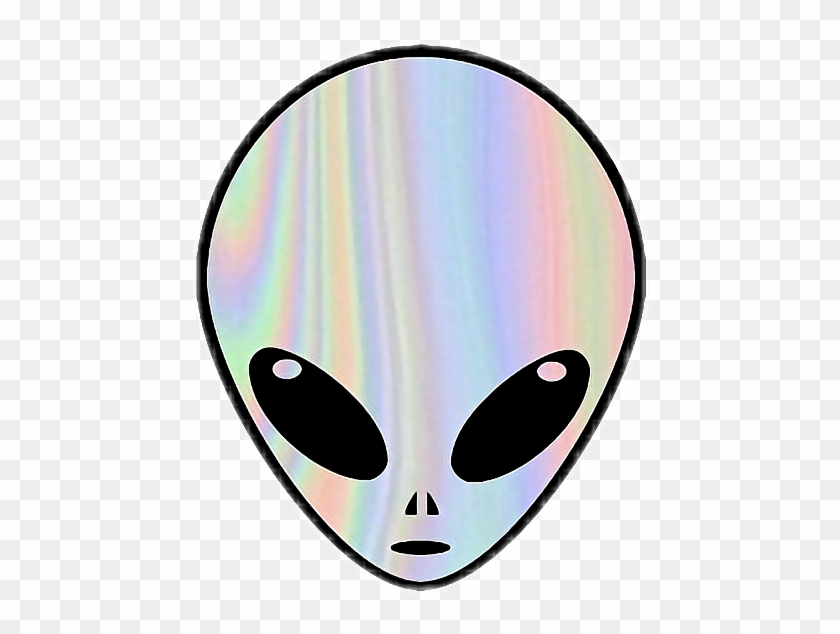

<!doctype html>
<html lang="en">

  <!doctype html>
<html lang="en">

<head>
 <meta charset="utf-8">
  <title> Technosignatures and Geosignatures </title>
  <link rel="icon" type="image/png" href="images/alien.png">
  <meta name="description" content="Hello World">
  <meta name="author" content="Sanya Arora">
  <meta name="description" content="A description of the search for extraterrestrial life">

  <meta content="text/html" http-equiv="Content-type" />
  <meta content="width=device-width, initial-scale=1" name="viewport" />

      <link href="https://fonts.googleapis.com/css2?family=Roboto&family=Ubuntu:wght@700&display=swap" rel="stylesheet">
  <link rel="stylesheet" href="https://maxcdn.bootstrapcdn.com/bootstrap/3.4.1/css/bootstrap.min.css">

   <script src="https://ajax.googleapis.com/ajax/libs/jquery/3.5.1/jquery.min.js"></script>
  <script src="https://maxcdn.bootstrapcdn.com/bootstrap/3.4.1/js/bootstrap.min.js"></script>
    <link rel="stylesheet" href="css/styles.css">

</head>


</html>
  <!doctype html>
<html lang="en">


<body>

	<nav class="navbar navbar-default">
	  <div class="container-fluid">
	    <div class="navbar-header">
	      <a> </a>
	     </div>
	    <ul class="nav navbar-nav">
	    	<li> <a href="#" style="color: #2e2a65; font-family: 'Ubuntu', sans-serif; font-size:20px"> Signs of Life Outside of Earth</a> </li>
	      <li><a href ="index.html"> Home </a></li>
	      <li> <a href ="about.html"> About </a></li>
	      <li class="dropdown">
	        <a class="dropdown-toggle" data-toggle="dropdown" href="#">Blog Posts
	        <span class="caret"></span></a>
	        <ul class="dropdown-menu">

			
	          <li><a href=Possible_life_on_Jupiter&#39;s_Moon.html>Possible life on Jupiter&#39;s Moon</a></li>
	        
	          <li><a href=NASA&#39;s_exoplanet_program.html>NASA&#39;s exoplanet program</a></li>
	        
	          <li><a href=Technosignatures_and_Geosignatures.html>Technosignatures and Geosignatures</a></li>
	        

	        </ul>
	      </li>
	    </ul>
	  </div>
	</nav>


		
</body>
</html>

<body>

  <h2> Technosignatures and Geosignatures </h2>
  <div class= "row">
      <div class ="col-lg-2">
        <h3> Sanya Arora </h3>
      </div>
      <div class ="col-lg-3">
        <h3> November 8, 2020 </h3>
      </div>
      <div class = "col-lg-2">
         <h3> 9:00pm </h3>
      </div>

  </div>  
      <div class = "container-fluid">
        <div class ="col-lg-12">
          <div class="jumbotron vertical-center" style="background-color: #f2e6dc">

          
            <p class="text"> The search for extraterrestrial life has often involved searching for geosignatures, or geographic signatures left by some life form on a planet. This search is quite difficult due the fact that it&#39;s hard to see geosygnatures. <br> </p>
            
            <p class="text"> However, Adam Frank, a professor of physics and astronomy at the University of Rochester, recently recieved a grant from NASA to search for technosignatures. Technosignatures are techonological signatures left by life forms, such as pollutants or certain types of energy. This could revolutionize the search for alien life by allowing scientists to search much farther than the previously could. <br> </p>
            
            
      </div>
    </div>
  </div>

<footer>
<html>

<div class ="footer">
  <p> Year of Creation: 2020, License Statement: No Cemmerical Use, Authorship Attribution: Sanya Arora </p>
</div>
</html>
</footer>
</body>

</html>